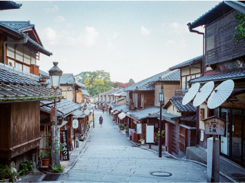

<!DOCTYPE html>
<html>
  <head>
    <title>自己紹介サイト</title>
    <meta charset="utf-8">
    <meta name="description" content="自己紹介と自分の趣味を掲載するサイト">
    <link rel="stylesheet" href="css/style.css">
    <link rel="preconnect" href="https://fonts.googleapis.com">
   <link rel="preconnect" href="https://fonts.gstatic.com" crossorigin>
   <link href="https://fonts.googleapis.com/css2?family=Noto+Sans+JP:wght@100..900&display=swap" rel="stylesheet">
  </head>
</html>
<body>
  <header>
    <h1 id="profile" href="index.html">My Profile</h1>
    <nav id="nav-pc">
      <ul>
        <li>
          <a href="index.html#about">About</a>
          <a href="index.html#works">Works</a>
        </li>
      </ul>
    </nav>
  </header>
  <main>
    <article>
      <div>
        
      </div>
      <section id="about">
        <h2 id="about">About</h2>
        
        <div class="content">
        <h3 class="name">Kazuki Asahina</h3>
        <p>・25歳 長野弦佐久市出身<br>・ソフトウェア業界でマーケティングに従事<br>・趣味はカメラ、愛機はCanon<br>・自然を撮影するのが好きで、海や山によく行く</p>
        </div>
      </section>
      <section>
        <h2 class="works">Works</h2>
        
        
        
      </section>
    </article>
  </main>
  <footer>
    <p>&copy;MyProfile.All rights reserved.</p>
  </footer>
</body>